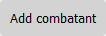

Guides for game master and player
Here are checked guides for the game master how to use the combat assistant effective.
Here are checked guides for the game master how to use the combat assistant effective.
On COMBAT you can add the combatants. Name them give them initiative, hit points and armor class (as a reminder) and chose player or non player character (not working now).

With this button you can set one or more status to the combatant.
When you click on this button you add the combatant to the list of combatants. the formula will be back blank (not the status formula). Repeat until all Combatants were done.
To start the Combat, click the red button in the lower left corner of the side.
Now you see your Combatants (Ini,Name,AC,HP(C/MAX), Status). That one that is gray is the active Combatant.
Under every Combatant is a range button. With that you can change the currently HP of every Combatant. The new value will show right after the range button.
When the turn of the active Combatant is done, Press "Next turn" in the lower left corner (the red one ;)). Now the next Combatant is gray. When the currently HP of a Combatant drops to zero and you press "Next turn" the Combatant get removed from the combat.
When you want to change the status of one Combatant then press "Change Status" right to "Next Turn". The Combat is now paused until you press "Save and return".
In the upper part of the side the status box is now open. Choose the Combatant and change the status. After that press "Save and return". You must do that for each Combatant at ones.
One last good advice: F5 clears all! Use it only to begin at Zero. You have been warned! To leave the combat site is the same, sorry guys. I'm working on it.